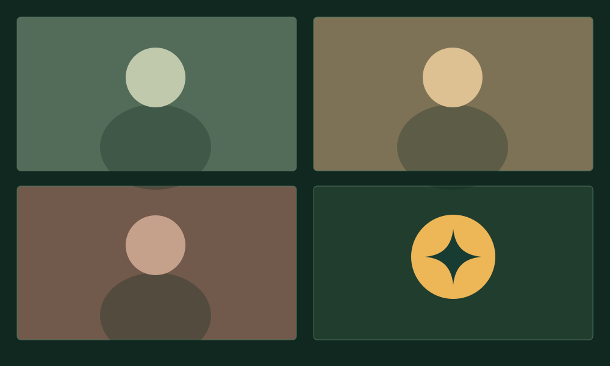

In the room.
In context.
It hears the team’s discussion.
Address Sparkie when you need it.
Sparkie joins your Zoom call, follows the discussion, and takes on work in your project.
It hears the team’s discussion.
Address Sparkie when you need it.
“Sparkie, turn that into an outline and save it in this project.”
The agent works while the meeting continues. Ask for another edit as the plan evolves.

Recording goes here.
“Sparkie, turn that decision into a product brief.”
Imagine: a brief to refine.
Zoom · Deepgram
Realtime · Gemini
Devin / Codex
Tools · Files · Commands
Separate Zoom participant tracks feed Deepgram transcription and Realtime semantic turn detection. Gemini checks whether the completed request addresses Sparkie. GPT Realtime handles the voice; a separate Devin or Codex worker carries out delegated project tasks.
Each task starts with the transcript context available at delegation. Later decisions need an explicit update. Results return to the voice conversation; people review the actual output.
Architecture evidence and research ↗A working prototype.
macOS Zoom. English speech.